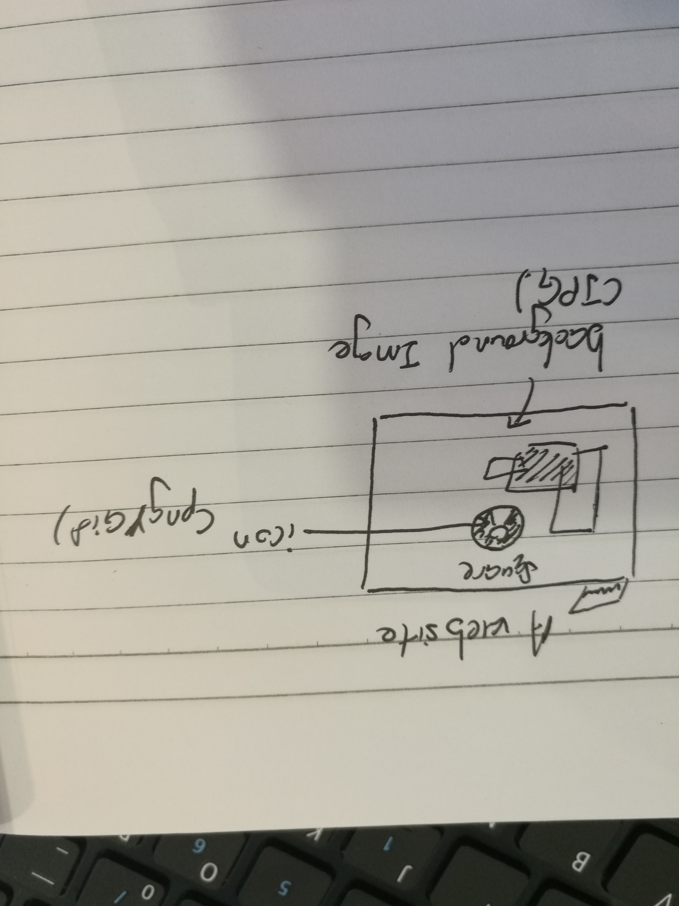

There are three type of graphic file format suitable for use in web pagE. First is the JPEG (Joint Photographic Expert Group), it also the most common and popular of graphic file format in the photo. JPEG can compress the image in very small size but it use the loosy compression cause the quality of image decline, and if repeat to edit and save it, the quality will continue to decline and it is cimulative and permanent. JPEG can support 24bit real color, it commonly used in colorful picture but not the less color picture, and it have a good compatibility for browser and web pages. Second is GIF (Graphic Interchange Format) and it use the lossless compression (LZW). GIF is suitable for icons,user interface line illustration. In the same time GIF also support the transparent background (no support alpha transparent channel), and almost support all the browser. The different of JPG and GIF is it use index color, it suitable used for the image color is less than 256 color or the clear edge vector picture. The last is PNG(Portable Network Graphic), it was the latest and the purpose is try to repalce GIF, so it try to make itself deffent and add some new function that is GIF no, such as not use LZW to compress, have a alpha transparent channel, support more type of color (1-48bit, CYMK, RGBa), improve quality. But it also has limitation that is in the standard of PNG cannot do the animation like GIF and it still cannot support all the browser such as IE6.
